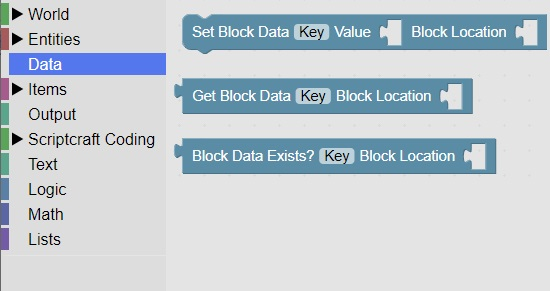

<H2>Block Data</H2>
<H3>Overview</h3>
Block data is that can be associated with a particular block in the game<br>
You can use this data to remember a state for a particular block in the game such as a button, or beacon.<br>
It is located in the Data section: <br>
<br>


   <hr>
<center></center>